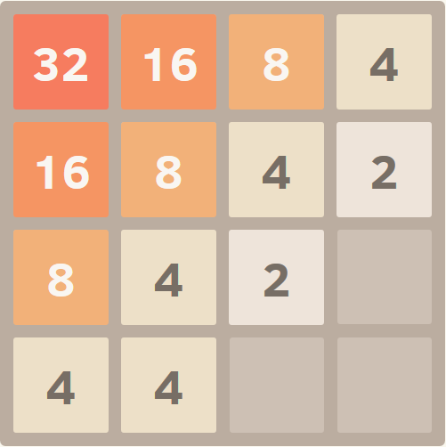
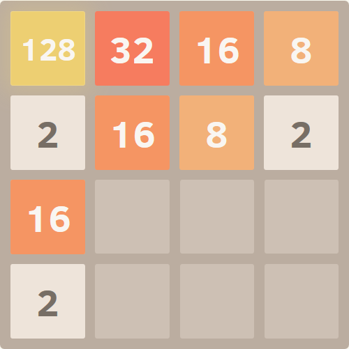

2048 is a single-player puzzle game. The original idea was contributed in March 2014 by Gabriele Cirulli using an inspiration of the 1024 app game. The purpose of the game is to dictate a sequence of arrow movements on a 4x4 board with the purpose of reaching the 2048 value on the board. Each arrow movement:
The game can be a bit frustrating for new players due to its simple rules and an easy start, which contrasts with the relative difficulty in the later game to reach a solution. In the following paragraphs we present a series of tips and tricks that should help shape a strategy for winning the game in the majority of the cases.
The 2048 game board hosts two main activities that are taking place all the time:
These 2 activities need to be organized in order to facilitate the process to take place incrementally. One way to do this is via a gradient, where you encourage the largest value of the board to be placed in one of its corners. All the other numbers would start initially at a distance from that corner, and then begin to close-in on it as they become bigger.

You can obtain this gradient pattern by following a basic sequence movement, consisting of pressing two arrows alternatively, one on the vertical direction and the other one on the horizontal direction (for example, arrow-up and arrow-left will place the largest value in the left-top corner).
You can follow this technique alone in order to reach easily a value of 128 or even higher. If you get stuck and neither of the two arrows is providing any valid moves, then move horizontally against the regular move (so do one arrow-right if you were doing arrow-lefts) and immediately after, do the regular vertical move. This should get the board unstuck and allow you to continue to play the game.
If you play a few games just using the strategy above, you might observe one of its flaws: when stuck, the suggestion to move horizontally against the regular movement has often a side-effect in the sense of moving the highest value on the board towards the center of the row. This is dangerous as a new 2 or 4 number might appear in the corner that freed up, and this might make it impossible to restore the highest value into a corner.
The best way to deal with this situation is to prevent it. Should you have the opportunity, you should always "move" new values on the home row (depending on how you move, the first or the last row on the board containing the highest value in its corner) so that it's always full (4 numbers out of 4). This will ensure that you can reverse the direction horizontally without risking to move the highest value.
The suggestion to move horizontally against the regular movement when no moves are available can be applied successfully when the board tends to be out of space. This is due to the fact that the gradient pattern becomes aligned when you shift the 2nd and 3rd rows to the right, and ideally the 1st home row would remain unchanged as it would have all its positions filled.
Therefore, by combining the first and second suggestion, you should be able to handle successfully cases where space becomes a bit tight.
Sometimes, specific low-value numbers can become trapped (surrounded) by higher values. Such a case is highlighted below, where the value 2 is surrounded by two 16 numbers:

Whenever this pattern is detected, it's recommended to try to merge as soon as possible the stranded value with other identical numbers in order to double it repeatedly until the anomaly is fixed.
The sooner this is happening, the higher the chances of fixing it are. Towards late-game, such incidents might materially impact the ability to finish the game successfully.
For the majority of board situations, you might initially believe that any of the two possible moves will overall have the same effect and you'll end up selecting randomly one of it. Spending a bit more time and 'simulating' how the board will look like in each case will enable you to go with the analysis one step forward and see details that will help you make the optimal choice (details that were not visible initially).
As you develop your skill-set you will gain the ability to decide in which board positions is it worthy to take the time and simulate in memory the board after every possible move, and which board positions aren't that strategically important. As a guideline, if you have a weird pattern forming or you performed a move that forced you to give up the game pattern, then spending a bit more time analyzing the board and getting back in shape can be an worthy effort.
The strategies presented go a long way to enrich your 2048 skill-set and improve your abilities for solving this puzzle. We recommend to implement the suggestions via your own practice and develop your own style of playing the game based on them.
If you want to practice the tips above, you can click the button below to start a new puzzle game. Good luck!
©2023 - 2048.org - Privacy Policy